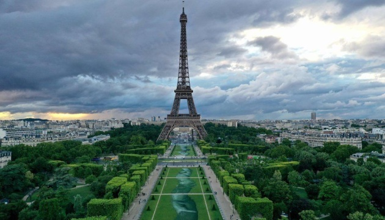
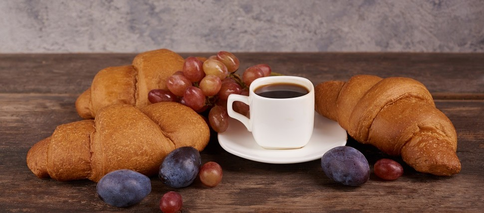
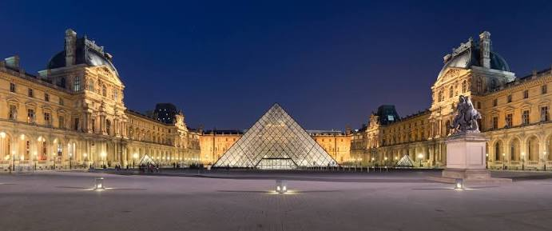
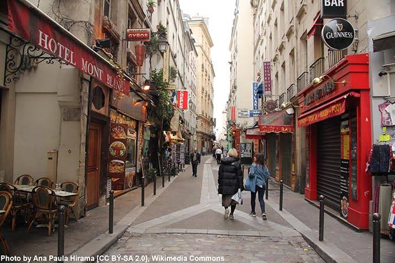

Визначні пам'ятки
Ейфелева вежа, Лувр і собор Паризької Богоматері — лише кілька місць, з яких варто почати знайомство з містом.

Кухня та гастрономія
Свіжі круасани, ароматна кава та французькі сири перетворюють кожен сніданок на маленьке свято.

Культура та традиції
Музеї, театри й галереї Парижа зберігають мистецьку спадщину та надихають митців з усього світу.

Особисті історії
Найбільше запам'яталася вечірня прогулянка набережною Сени, коли вогні міста відбивалися у воді.
